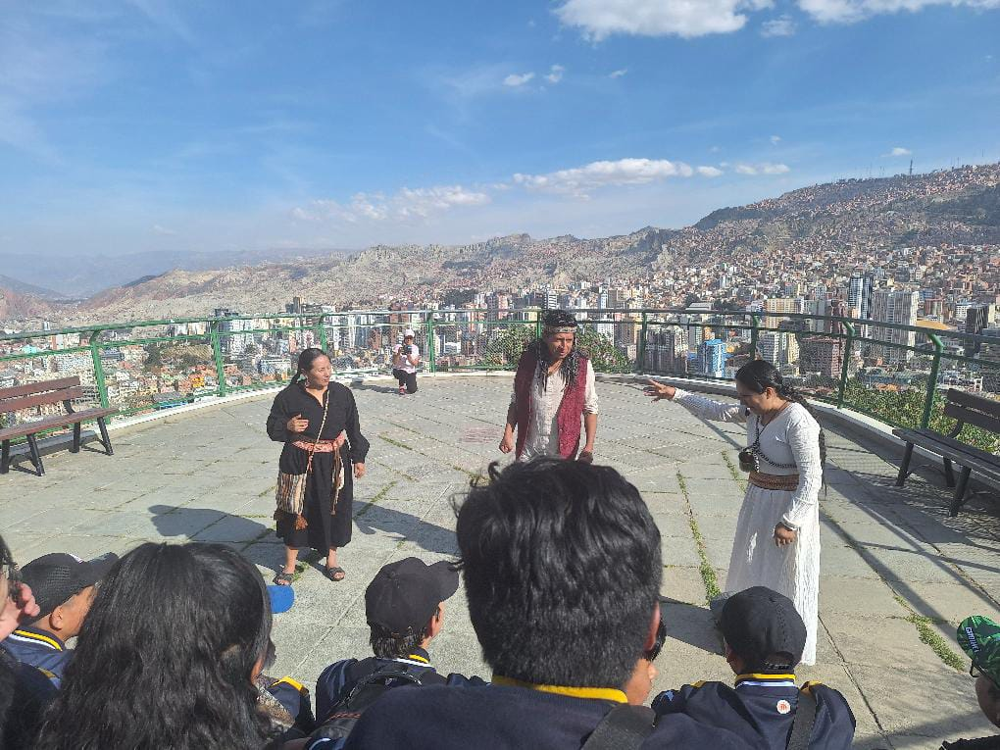
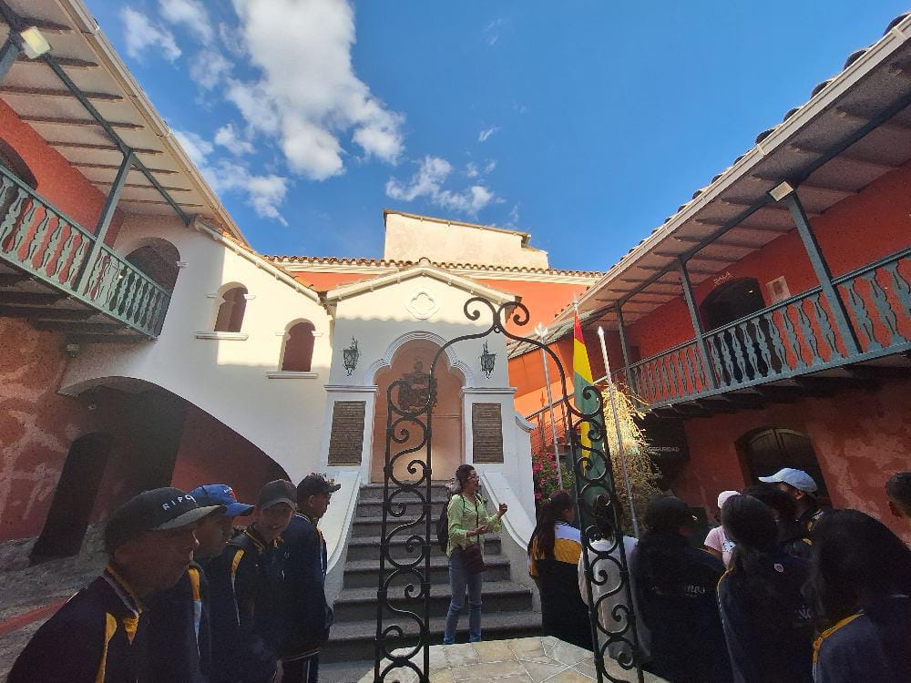
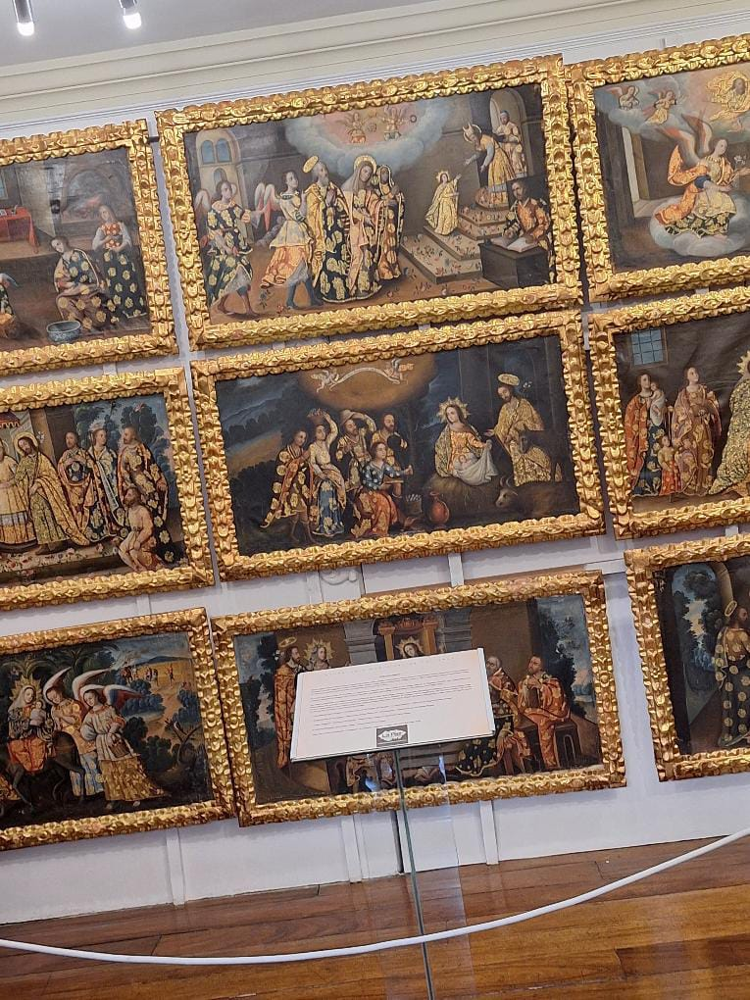
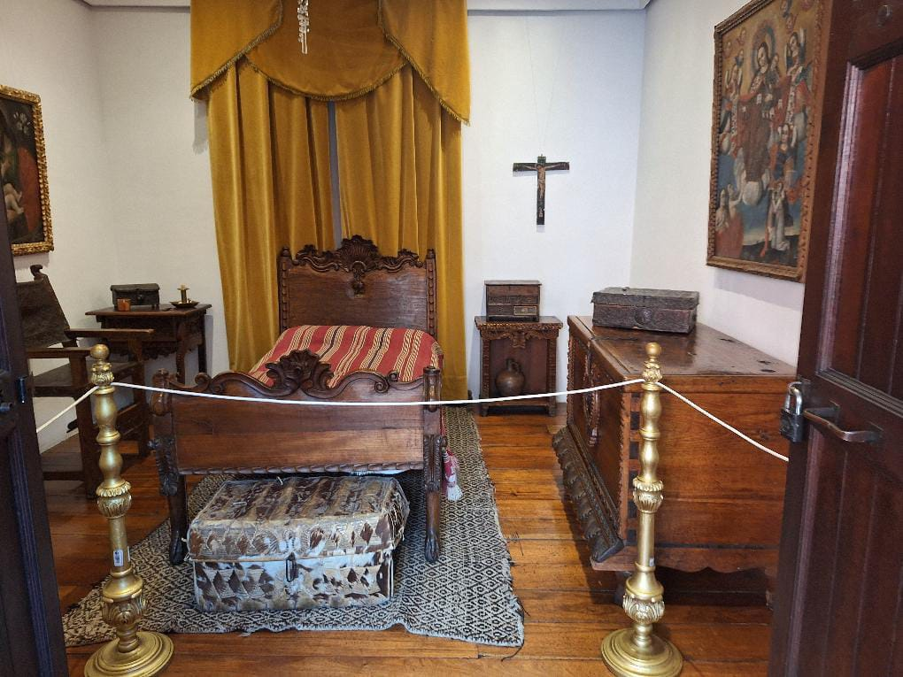
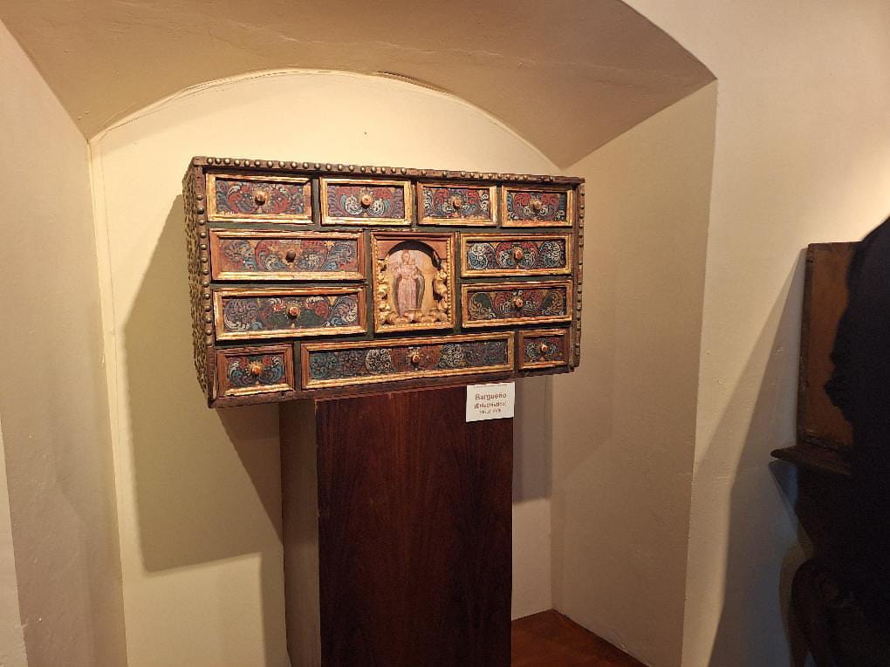
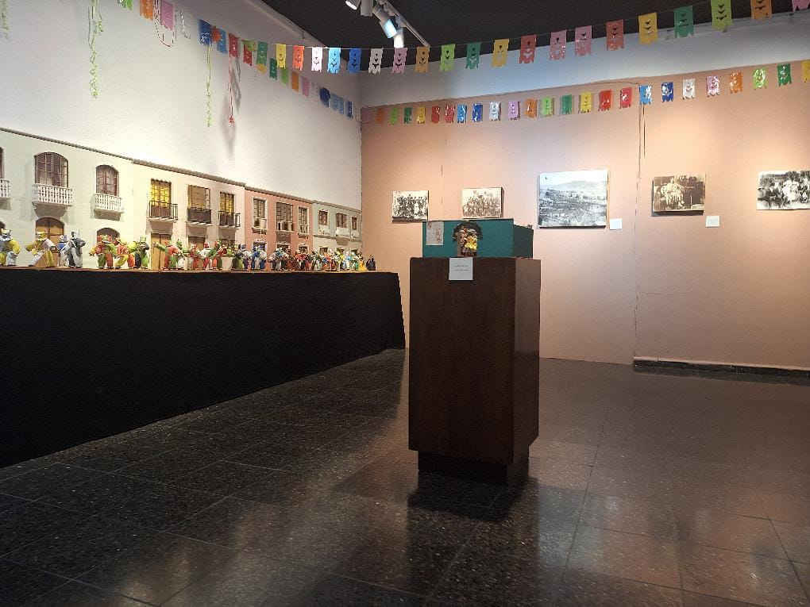
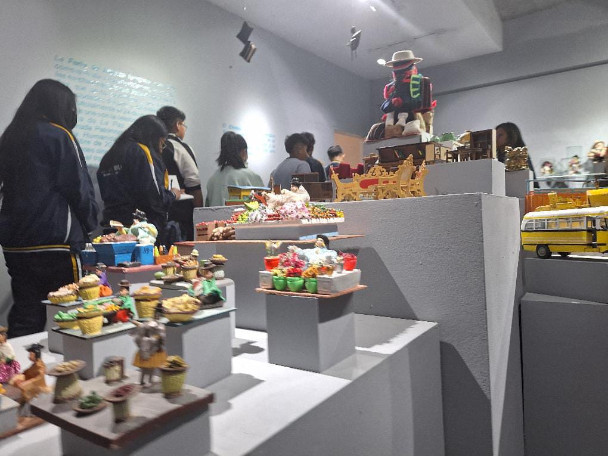
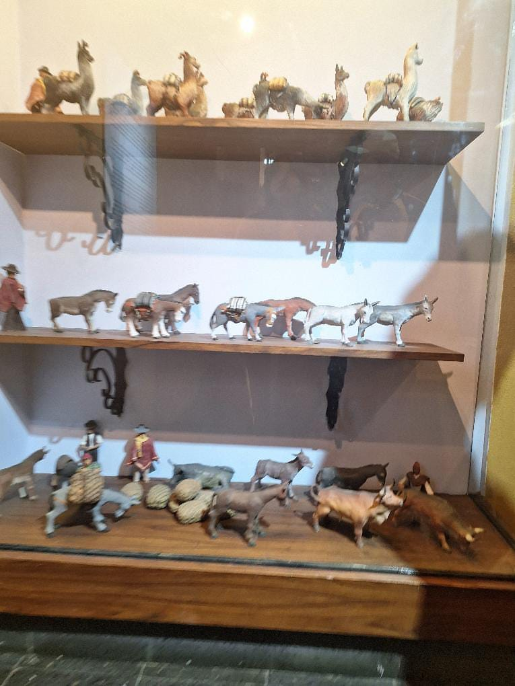
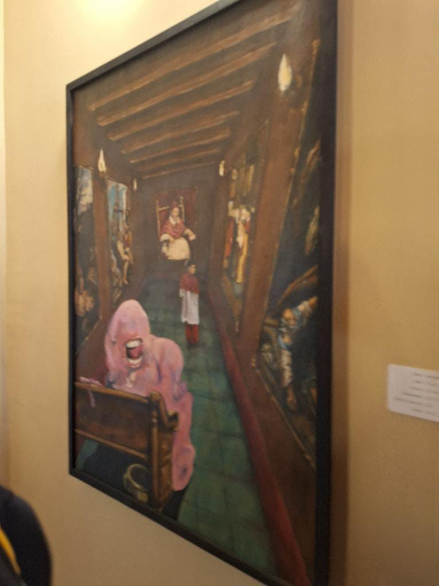

UN PASEO POR LA PAZ
Hacer click a las imagenes para ver descripcion

Introduccion relacionada con el paseo que se realiza, teatralizando el cerco a La Paz

Entrada a la casa de Murillo, hubicada en la calle Jaen

Algunos cuadros representando la creencia de Murillo

Habitacion de Murillo

Cofre tallado en madera, conocido como baúl o petaca

Museo Costumbrista. Representacion de la danza de los chutas y pepinos en el carnaval de antaño

Representacion de la feria de miniatura (ALASITAS)

Miniaturas de Antaño

Un autorretrato, observando cuadros mas elaborados
Hecho por: Alba Cortez